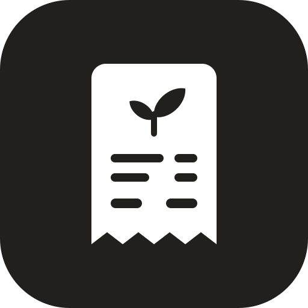

Brand guidelines
The Groceipt brand.
Every choice has a reason. Here they all are.
Who we are.
Purpose
Help households get the most out of their food.
Customer
Home cooks who shop about once a week.
Value
Know what you have, and what to cook and buy next.
WhyOur customer is busy, means well, and feels bad about waste. Every rule below starts there.
A weekly rhythm, not a chore.
User experience
- Before you shopYour list is started for you.
- In the storeThe list works with no signal.
- At homeSnap the receipt. About 30 seconds.
- During the weekUse-soon nudges and meal ideas.
Brand experience
Like a friend who’s good in the kitchen: quick, calm and never judging.
WhyNo daily logging and no calorie counting. Once a week fits real life.
How we sound.
Personality
Warm. Practical. Encouraging. Honest.
WhyPeople already feel guilty about waste. We help them; we never lecture.
Tagline
Snap your receipt. Eat better, waste less, spend less.
WhyWhat you do, then the three wins. Nine words.
Core marketing themes
- 30 seconds, once a week.No daily logging.
- Use it before you lose it.The Kitchen knows what to use first.
- It tells you what’s next.Meals from what you have. Lists for what you need.
- See where the money goes.Spending and waste, with no guilt.
- Better, your way.Your diets and allergies come first.
Say
Spinach should be used by Thursday.
About $8 of food went unused.
Not
WARNING: 2 items expiring!
You wasted $8!
One idea per section.
Headlines under six words.
Estimates say “about.”
A receipt that grows food.
 Groceipt
Groceipt
Groceipt
Groceipt

WhyGroceipt starts with a receipt. The sprout is fresh food growing out of it. Simple shapes stay sharp from a tiny icon to a billboard.
Fresh green on receipt paper.
WhyGreen means fresh, so food that’s still good is our green. Basil is the same green, dark enough for words. Thermal and Print are the cool white and soft black of real receipt paper.
Two typefaces.
Snap your receipt
Eat better, waste less, spend less.
TOTAL28.24
WhyOne family for every word, and a receipt face only where a receipt would print. Both are free Google Fonts.
How we built it.
Website
- Claude CodeSelectedExact control of every brand detail. Free hosting.
- LovableSecond versionBuilt from the same brief, to compare.
- Base44, ReplitConsideredFull app builders: more than a two-page site needs.
Visual identity
- RGB contrast toolsSelectedEvery color pair passes WCAG AA.
- Vector drawingSelectedThe logo stays sharp at every size.
- DALL-ETriedGood for ideas. Makes flat images, not logo files.
- Nano BananaConsideredSame limits. Could make lifestyle photos later.